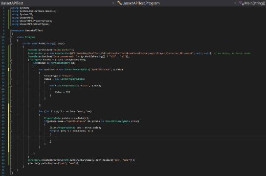
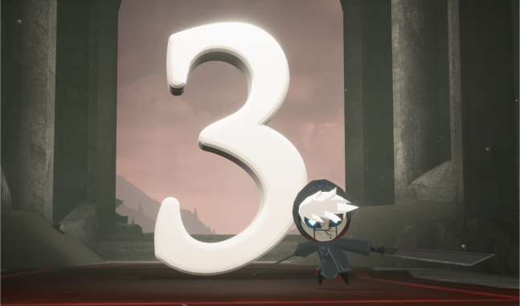
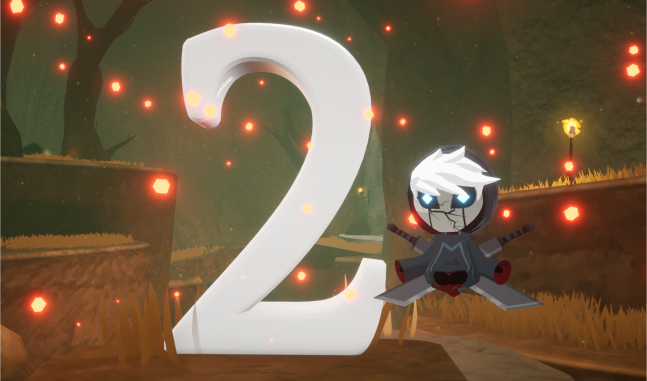
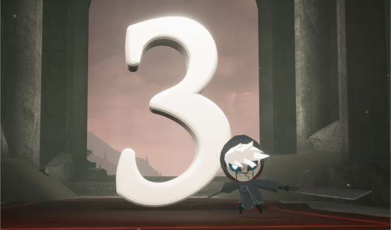
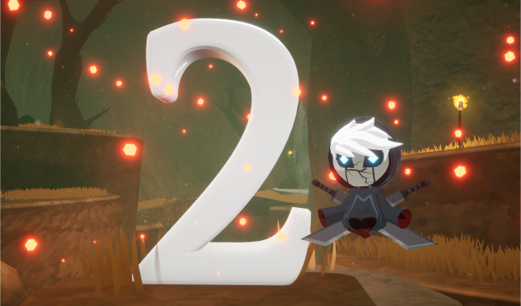

honestly i should probably copy out my devlogs for stove and the rando and put them on their dedicated projects page...
okay i'll leave out the pain of figuring out the intricacies of map files and the many PRs and backend changes but i did it and figured out how to transplant actors between maps
yeah yeah shut up americans for me it's an s not a z.
for people who don't know a randomiser is a game mode that enhances replayability by shuffling pickups randomly
while ensuring the game is still beatable without glitches.
this was where i really started to learn coding because to do this i had to edit the data, not just some 3D models or textures.
eventually after a ridiculous amount of digging for specific modding communities for games made in unreal
i did discover the awesome work of dmgvol in the ghostrunner community and his modding guides
which mentioned uassetapi so i learned c# just to use it

i honestly didn't really do much with this except changing object positions
then buckminsterfullerine dropped into the server and showed us what modding plebians we were,
showering us with cool tools and resources about blueprints.
 yeah i'm a stubborn motherfucker.
yeah i'm a stubborn motherfucker.
after a couple months of procrastinating actually making the randomiser by making it look pretty in winforms
i actually started doing some research on how i could implement it.
my first attempts involved editing the enums and datatables.
while this worked it only worked within the item types so after i realised this i was kind of stumped
i realised since i could change object positions using uassetapi i could make a small map editor to make this easier.
i originally made this using opentk and the GL_EditorFramework used in spotlight, the super mario 3D world editor.
in doing this, i noticed that some actors would have properties which other actors of the same type did not
and after adding in those properties i was delighted see those were used in-game so i could mix drops from chests and change sapphire ore chests
it was only by SUMMER 2022 that i finally was getting somewhere and was getting better at coding.
ALSO CAN I STILL MENTION HOW AWESOME IT WAS WE WERE STILL TALKING ON THE SERVER.
a lot of the trouble was with figuring out randomiser logic and 3D graphics shenanigans.
by the end of the holiday i had a broken mess of a randomiser, a questionably functional map editor and i decided to learn rust
since i had heard that somebody had written a uasset library for the language and i wanted something fresh.
it literally only took 2 days for rust to click for me.
i made a pretty functional uassetgui clone to learn the language and familiarise myself with unreal_asset
and i also got a commision to make a modding tool for multiversus before modders got shut down and got paid with journey to the savage planet.
after the absurd developments with stove i could finally place whatever i wanted in the world.
that didn't affect cutscenes and npcs though which really sucked.
of course i eventually found the solution after a bunch of work -
the shops were located in the savegame blueprint so i could edit them there (actually nilo still doesn't work :p).
however the npcs were still yet to be figured out.
to fix this, naturally i discovered a new modding technique - function library hooking.
create a dummy of the function library with all the correct function names, inputs and outputs and then duplicate that
name that duplicate to whatever you want and for each function in it call the original function that is in your dummy (i'd back this duplicate up)
then you can change the function to do whatever you want
cook the project and you'll have your hook and your dummy
delete the dummy
change any name reference to the function library in the target actor to your hook
since you didn't include the dummy the game will call the actual functions provided the function target is the dummy along with your stuff
the finished logic still wasn't great since it tried to procedurally place items
rather than check random seeds for beatability
and that led to all the good items being at the start.
this wasn't fixed until i made the pseudoregalia randomiser and ported the implementation to the blue fire randomiser
but there wasn't much fanfare for it as by then another year had gone and the server had essentially come to a standstill :(


 this included clips of a cut boss, SIRION (A MAJOR BOSS) AND QUEEN (THE FINAL BOSS).
apparently they hadn't been given permission to post that footage so it was quickly taken down!
i just wish i had the forethought to download the videos - yet more lost media :p
this included clips of a cut boss, SIRION (A MAJOR BOSS) AND QUEEN (THE FINAL BOSS).
apparently they hadn't been given permission to post that footage so it was quickly taken down!
i just wish i had the forethought to download the videos - yet more lost media :p

 


